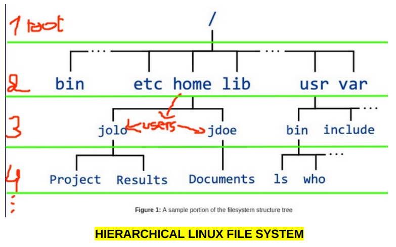

LINUX:
Introduction
1
Qu’est-ce que Linux : Linux est un système d’exploitation comme Windows ou mac , mais en mieux . Techniquement, Linux est un noyau. Et la soi-disant distributions Linux telles que : Ubuntu , kali ,Fedora ou ZORIN OS sont les systèmes d’exploitation qui sont construits sur le noyau Linux . Linux est donc la partie commune entre ces distributions mais pas le système d’exploitation réel .Ses déférentes distributions sont le système d’exploitation que vous pouvez installer
Système des fichiers
2
Nous dévirons parler du système de fichiers et la structure sous Linux : Alors que le windows utilise des lettres de lecteur ( C : , D : , etc ) pour organiser les fichiers dans des dossiers , Linux utilise en revanche une structure de répertoire hiérarchique “le répertoire est un dossier sous Linux . Donc , cela se passe comme suit : le répertoire racine est le répertoire SUPERIEUR du système Linux contenant tous les fichiers , les données de l’appareil et les informations système , ainsi que les fichiers de configuration cachés pour certains application que vous avez installées .Autrement dit, tout. L'un des répertoires de la racine’/, le répertoire est home/, c'est là que se trouvent les fichiers des utilisateurs et c'est ce dont nous allons nous occuper. "Vous ne devriez PAS vous embêter avec quoi que ce soit d'autre qui se trouve inconsciemment dans le répertoire /"root" car cela pourrait casser le système".
The terminal
3
What is the terminal: The file manager is a Graphical User Interface (GUI) that allows us to navigate and manage files and directories like (view, copy, move, delete, rename....) view files and directories happens by default in this GUI component, we can see the home directory that contains other sub directories in it which we’ll contain our data.
“The Terminal “ est une interface de ligne de commande (CLI) qui nous permet de faire bien plus simplement en tapant des commandes, Linux était censé être utilisé de cette façon parce qu'il est plus efficace et donc beaucoup plus puissant. Les applications GUI telles que le gestionnaire de fichiers sont une manière graphique de sous Linux, c'est plus facile mais aussi limitant.

Pour ouvrir le terminal, essayez ctrl+alt+t. Sinon, tapez simplement terminal dans la barre de recherche ou cliquez sur l'icône dans le menu de l'application. Lorsque vous ouvrez le terminal, vous verrez quelque chose comme ceci :
Le répertoire par défaut dans le terminal est home. Ce caractère ~ (tilde) fait référence à l'utilisateur répertoire personnel. Nous avons maintenant une chance de commencer à regarder les commandes :
Commands de Linux :
PWD
1
pwd : signifier Print Working Directory. il écrit le chemin du répertoire de travail. dans ce cas, nous avons "/home/zorin". le premier ‘/’ fait référence à le répertoire racine, qu'à l'intérieur de celui-ci le répertoire "home/" et "zorin" est le nom de l'utilisateur. Donc c'est "/ puis home / puis zorin" et à la place nous avons ~ pour faire court.Le $ (signe dollar) après ~ est juste pour indiquer l'emplacement du curseur "où vous pouvez commencer à taper". - ls : signifie Liste. pour lister le contenu du répertoire courant nous tapons ls.

Voici comment afficher le contenu de votre dossier à l'aide du terminal.
CD
2
- cd : Changer de répertoire Pour accéder à l'un des dossiers du répertoire en cours, nous tapons cd puis le nom de celui-ci répertoire, par exemple cd Documents, puis appuyez sur entrée. Nous remarquons que le chemin change de forme (~) à (~/Documents) et c'est comme ouvrir ça répertoire dans le gestionnaire de fichiers.

Pour accéder au répertoire racine dont nous avons parlé précédemment, nous pouvons y accéder en utilisant la commande cd, nous savons que root est le répertoire le plus élevé "comme le premier grands-parents" nous n'avons donc qu'à revenir au répertoire précédent avec cette commande "CD..". Les doubles points (..) font référence au répertoire parent ou précédent
Nous sommes passés de Documents au répertoire utilisateur zorin/ puis home/ puis root ‘/’. - Pour revenir au dossier de l'utilisateur par défaut "le ~chemin", tapez simplement cd. Peu importe l'endroit vous êtes à, il vous ramènera à home .
Also we can navigate to any directory just by typing the path after cd
Assez avec le cd et faisons écho.
ECHO
3
- echo : ce qu'il fait est d'afficher la chaîne de texte qui vient après.

Création de fichiers
4
C'est ainsi que nous créons un fichier à l'aide de l'application GUI.

Pour ce faire, en utilisant le terminal, il y a une commande pour ce qui est "toucher" après le nomdu fichier que vous souhaitez créer. Mais dans le « tp de l’univ » nous avons utilisé un autre moyen qui est :

Le symbole '>' est un opérateur de redirection qui redirige la sortie de la commande avant le symbole dans un fichier après le symbole, si le fichier n'existe pas, cet opérateur le créera en premier "dans cet exemple, il n'y a rien avant '>' donc cela crée un fichier vide". Mais si le fichier existe, quel que soit le contenu de ce fichier sera écrasé par cette sortie. Afin d'ajouter le texte au fichier afin de ne pas écraser le contenu du fichier, nous utilisons ">>" et cela a le même effet qu'un simple '>' (si le fichier n'existe pas, il sera d'abord créé). Maintenant "Tfile" est vide, utilisons cet opérateur pour y écrire :

nous avons redirigé la sortie de echo qui est Linux dans le Tfile.
CAT
5
cat : signifie concaténer, il affiche le contenu d'un fichier. (différent de ls qui liste le contenu d'un REPERTOIRE). Donc, dans cet exemple, nous avons écrit Linux dans "Tfile".

Dans cet exemple, nous avons écrasé le contenu de“ Tfile “ qui est Linux par Zorin. Pour ne pas perdre le contenu de“ Tfile “ comme nous l'avons dit, nous devrions utiliser ">>"

donc ici, nous ajoutons à “ Tfile“ et ne perdons pas ce contenu. Linux après Zorin.
MKDIR
6
mkdir : signifie faire répertoire. Ce qu'il fait est explicite.

CP
7
cp : signifie copie.
Copions le Tfile dans le nouveau répertoire que nous avons créé : "cp fileName destination"


nous pouvons voir que le Tfile est copié avec succès dans new/ Nous pouvons également utiliser la commande cp pour créer une copie d'un fichier et renommer la copie, cp ancien- nom nouveau-nom.

pour combiner les méthodes précédentes ou copier, essayez ceci : cp fileName destination/newName ainsi par exemple : cp Tfile new/file1 créera une copie de Tfile dans new/ et nommera la copie file1.
MV
8
mv : déplacer. Nous pouvons l'utiliser pour renommer un fichier. De Tfile à file2

Nous pouvons également déplacer un fichier vers un autre chemin. (couper pas copier)

On peut ls le répertoire suivant ou le précédent SANS cd. Tapez simplement le chemin après ls

même "ls /" fonctionnerait, essayez-le. Créons maintenant un autre répertoire en utilisant mkdir
Actuellement dans le répertoire Documents nous avons un fichier nommé « file2 », un répertoire vide « other » et un répertoire contenant des fichiers à l'intérieur, donc pas vide. Supprimons.
RM / RMDIR
9
rm / rmdir : supprimer/supprimer le répertoire. Comme vous pouvez vous attendre à ce que rm supprime des fichiers et que rmdir supprime des répertoires.


nous avons utilisé rm pour supprimer "file2" et rmdir pour supprimer "other/" Maintenant, la seule chose qui reste dans Documents/ is new / ramenons le Tfile de new/ pour ne pas le perdre :
et maintenant nous allons essayer de supprimer new/ en utilisant rmdir ? :

Comme vous remarquez que rmdir n'a pas réussi à supprimer new/, car il n'est pas fait pour supprimer un fichier non vide donc nous devrions utiliser rm avec flag –r, ce qui signifie supprimer ceci de manière récursive. C'est le moyen de supprimer un répertoire avec tout son contenu.
FLAGS
10
flags : comme nous l'avons vu avec rm –r, la plupart des commandes ont des options ou ce qu'on appelle flag . Cela nous permet faire plus de choses. Par exemple, retournons à Home et énumérons tout d'une manière différente.

ls -l : format de liste longue. Ainsi, il affiche plus d'informations sur le contenu de “ home “
ls -la : combine le format de liste longue avec la liste de tous afin qu'il y ait plus de fichiers que ce que nous voyons en utilisant ls, les fichiers qui commencent par un point '.' sont masqués et l'option -a affiche tout.
MAN
11
man : manuel. cette commande nous permet de voir la fonctionnalité des autres commandes, et comment pour les utiliser, en d'autres termes, la documentation des commandes.

Par exemple, cette commande de date nous montre la date et l'heure du moment actuel. En exécutant la commande man date, j'ai vu le manuel de la commande et j'ai découvert que la date d'exécution "+%j" n'aura pas la sortie précédente mais affichera le nombre de jours depuis le début de l'année.
TLDR
12
tldr : trop long ; n'a pas lu.
la commande man n'est pas la plus conviviale d'une documentation, donc la commande tldr était créé à cet effet. Mais d'abord, nous devons l'installer.

apt install est le moyen d'installer des applications ou des outils comme tldr sur certaines distributions comme ubuntu ou zorin, et sudo signifie Super User Do, puis entrez le mot de passe et continuez l'installation. Maintenant que l'outil tldr est installé, nous pouvons l'utiliser de la même manière que nous utilisons man commande.
L'UTILISATION DE L'OUTIL TLDR NÉCESSITE UNE CONNEXION INTERNET.

Maintenant, regardez ces commandes, si vous avez suivi, vous devriez être capable de le comprendre par vous-même.
Note
13
Maintenant, il y a quelques notes très importantes que vous devriez toujours garder à l'esprit :
– contrairement à Windows, Linux est sensible à la casse, ce qui signifie que si vous tapez Pwd, le terminal vous montrer une erreur, tout doit être en minuscules pwd. Aussi le nom des fichiers et des répertoires, dans l'exemple précédent, si vous tapez des documents cd, cela vous indiquerait que ce répertoire ne fonctionne pas existent parce que c'est différent des documents avec “D “en majuscule.
– De plus, un répertoire se termine toujours par une barre oblique '/'. Mais un fichier normal ne fonctionne pas comme dans ce chemin : /home/zorin/Document. Ce sont tous des répertoires, ils doivent donc se terminer par '/'sauf pour le dernier répertoire ce n'est pas nécessaire.
- Vous devez être très prudent lorsque vous supprimez quoi que ce soit à l'aide du terminal. Parce qu'il y a pas de corbeille ou un moyen de ramener le fichier supprimé.
- Il n'y a pas d'annulation dans le terminal, vous devez donc être prudent lorsque vous modifiez quoi que ce soit pas seulement lorsque vous supprimez un fichier.
CONSEILS:
14
Astuce 1 : pour vous faciliter la vie utilisez tab, lorsque vous tapez cd V, si vous cliquez sur le bouton tab il complétera automatiquement le nom du répertoire qui commence par un V qui est Vidéos. S’il y a d'autres répertoires qui commencent par cette lettre, comme D, nous avons Documents,
Téléchargements et Bureau, vous devez taper plus de caractères pour utiliser l'astuce de tabulation.
– Astuce 2 : si vous tapez « cd », puis double-cliquez sur le bouton de tabulation, vous listerez les options que vous pouvez choisir, également dans l'exemple précédent si vous tapez "cd D" puis double tab.
-Astuce3 : pour copier à l'aide du terminal, sélectionnez le texte à l'aide de la souris puis cliquez sur ctrl+maj+c. et pour coller ctrl+shift+v.
– Astuce4 : les touches fléchées haut et bas vous permettent de naviguer vers les commandes précédentes qui vous avez exécuté.
– Astuce 5 : une commande appelée history vous listera toutes les commandes que vous avez exécutées.
– Tip6: si vous souhaitez ouvrir un fichier à l'aide de l'application par défaut conçue pour l'ouvrir de ce type de fichiers, tapez xdg-open, mais cela dépend de la distribution que vous utilisez cela peut ou peut ne pas fonctionner.
– Astuce7 : pour arrêter une exécution cliquez sur ctrl+c, donc si un programme prend trop de temps et que vous voulez l'interrompre, utilisez ctrl+c. "bien sûr avant la fin de l'exécution «par exemple : il y a une commande appelée du « Afficher le nombre de blocs utilisés pour les fichiers ».donc si nous cd /, puis tapez du, cela affichera tous les sous-répertoires avec le nombre de bloquer qu'il utilise pour tous les fichiers qu'il contient, et cela prendra très longtemps, donc pour interrompre cela l'exécution, cliquez simplement sur ctrl+c.
– Astuce 8 : nous avons dit précédemment que man date affichera le manuel de cette commande, pour sortir ce clic manuel q.
Il y a aussi un outil appelé nano, c'est un éditeur de texte à l'intérieur du terminal, pour en sortir cliquez sur ctrl+x.
Un autre cas est le mode interactif python, donc lorsque vous tapez python et que vous l'exécutez, vous ouvrirez ce mode. pour quitter, utilisez ctrl+d.
Conclusion
15
Au final, quel que soit le problème que vous rencontrez, que ce soit l'oubli du nom d'un commande, Ne sachant pas comment cela fonctionne, Comment télécharger une application sur votre distribution ou même comment installer Linux. demandez toujours à Google ou regardez une vidéo sur Youtube à ce sujet ou toute autre chose que vous ressentez utilisation confortable. C'est le conseil le plus important en général, vous ne devriez jamais vous sentir "bel 3jza".